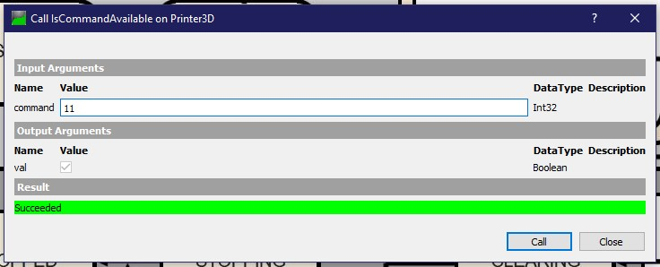

Go back
Calling a method
- In UaExpert with the client connected to the server, in the adress space, develop an instance where you want to call a method.
- Methods are identifiable in UaExpert by their pink boxes.
- Right click on one method, and select "Call" to call the method.
- In the window that opened, if there's a section "Input Arguments", that's the parameters of the method. Fill the input boxes with the correct DataType (indicated on the right of the box)
- Click on "Call" to call the method. If there's a section "Output Arguments", then the output will be shown here.
- Below is a screen of a successful call of the function "IsCommandAvailable" called on the instance "Printer3D". The user gave "11" as an input and the server gave back the value "True" as its output argument.
